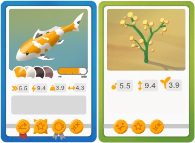
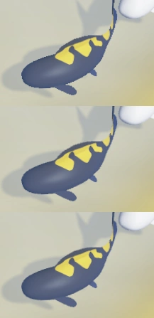
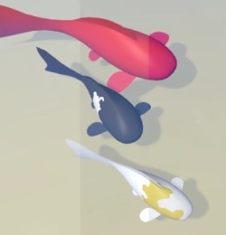

Everything that can be collected in the game has two forms: it can exist in the game world, or it can exist as a collectible trading card. If something can be turned into a trading card, it can also be turned into an object in the game world again.
This mechanic is very important for Koi Farm. The original game had koi cards, but there were some issues with them that became obvious when people started playing the game:
The first thing I needed to address was storage. Just like koi farm one, there are two main places where cards exist:

Besides these two systems, cards can also be inspected closer or compared to other cards (the latter should help a lot with crossbreeding for certain properties). When a card is inspected, more information can be shown about the koi (or object) in that card. I'm planning to add a DNA viewer and a family tree viewer that can be shown when a card is being inspected.
The card hand in Koi Farm 1 fits fewer than ten cards, and that may be too few for Koi Farm 2 because there will be more cards in general. The scene can contain more koi in multiple ponds, and plants and other objects can also be turned into cards. To increase capacity without making cards overlap so much they occlude each other's details, I've created a small stack of cards under the leftmost card. The player can scroll or swipe on the card hand. When swiping away from the stack, the rightmost cards shift to the bottom of the stack while cards from the top of the stack rotate into the card hand. This stack only shows up when there are too many cards in the hand to display clearly, but it will allow the player to have a bit more room to manage collectibles in the game.
The card rendering system is fully 3D. The cards have a very slight thickness, the picture frames will render in 3D (which gives nice effects when the card is rotated), and I can add foil or holographic effects to rare cards. I've also made the system such that cards can bend, but I haven't used that yet.
I've now added the first interface elements. Animating them and making them feel responsive enough can be tricky. The game updates at about 40Hz, while the frame rate and the cursor update at a higher rate. This can make cards feel "heavy". I was able to improve this by giving some feedback, like hover effects, on the render thread, while still moving elements on the update thread. Using nice animation curves also goes a long way.

Until now, there was no antialiasing in the game, which means that edges weren't soft but pixelated. The image on the right shows how this looked in the first frame. The second frame shows 2xMSAA and the third frame shows 4xMSAA, edges are softer here. That's because every pixel doesn't correspond to exactly one object; instead, every pixel averages 2 or 4 different positions within that pixel.
There are other antialiasing techniques besides MSAA, but in my opinion, MSAA is so much better that I don't want to use the others. The downside of MSAA is that it requires more VRAM and processing power, and in my case, that it needs to be applied thrice:
This can be a bit much on some devices, so I've made these settings configurable. The underwater scene is distorted by the waves, so I can get away with a lower number of samples there, making antialiasing underwater rather cheap. I don't have that many objects above water yet, so it remains to be seen how much antialiasing is required there. For the interface, it feels like more antialiasing is important. Pixelated edges on cards look very bad, so I will only turn that off on the lowest settings.

I've also changed the amount of detail in the games render targets, which means there's more information about lighting per pixel. That means I can now do things like tonemapping, which means fine-tuning the way colors look. I can change contrast, darkness, exposure and other things to make the colors look strong instead of faded. Games often change the way colors are interpreted based on the average lighting on the scene. You may notice that some games take some time to adjust to entering brightly lit or dark areas. This means the tonemapping parameters are adjusting to a lower or higher amount of light. At night, tonemapping can help shift colors more towards blues while raising the overall brightness to prevent the scene from becoming completely black.
Another benefit of using higher resolution colors is that I can now support HDR monitors which can display a wider range of colors. Unfortunately, I don't have such a monitor at the moment, so I can only start testing this after I buy one. Finally, the extra color information will be helpful to add bloom effects to very brightly lit areas.